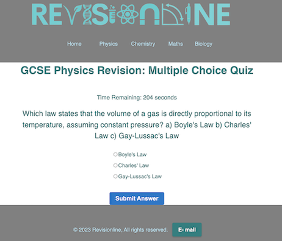

Welcome to Revisionline, an online revision website for GCSE/ IGCSE and A level science! Without a doubt, Practice questions are the best way to revise science, but they can be time-consuming, which is why our 5-minute tests are a good alternative. Our website is designed to help students prepare for their science exams by providing access to a range of online practice questions, notes and 5-minute tests. We cover a variety of topics across Physics, Chemistry, Biology and Maths, ensuring that students have the resources they need to succeed. Our online practice questions are written by subject experts and are designed to closely mirror the style and difficulty of the questions that students can expect to encounter in their exams. We also offer 5-minute tests that provide instant feedback on student progress, allowing them to identify areas where they may need to focus their revision. Our website is easy to navigate, and students can access our resources at any time, from any location with an internet connection. Whether students are looking for a quick revision session on a specific topic or a challenging, interesting problem to solve, our website provides the flexibility and support they need to succeed. Our resources are designed for Edexcel (GCSE) and AQA (A level), but are still helpful for other exam boards. So if you're looking for a comprehensive online resource for some quick, high impact revision, look no further than our platform. With our range of range of questions, we're confident that we can help you achieve great exam results!
Naa'il Khokhar, Founder and CEO of Revisionline
